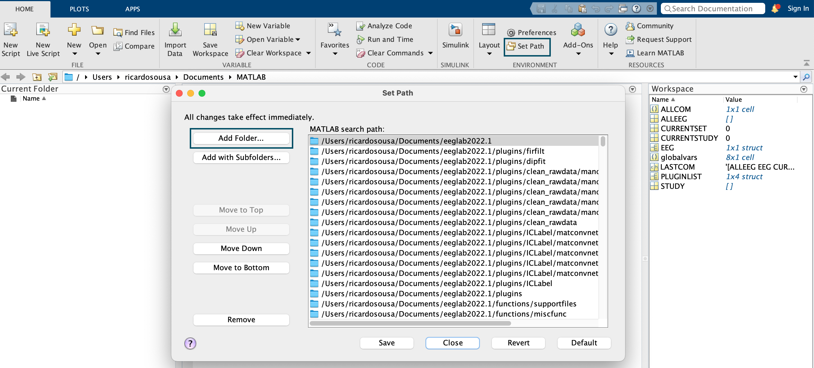
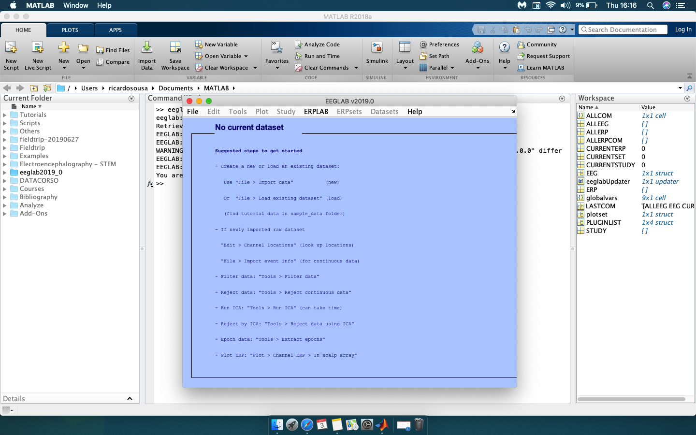
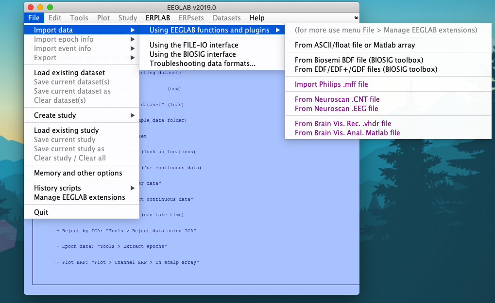
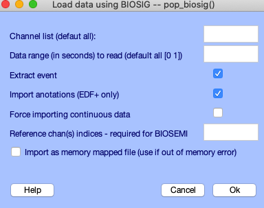
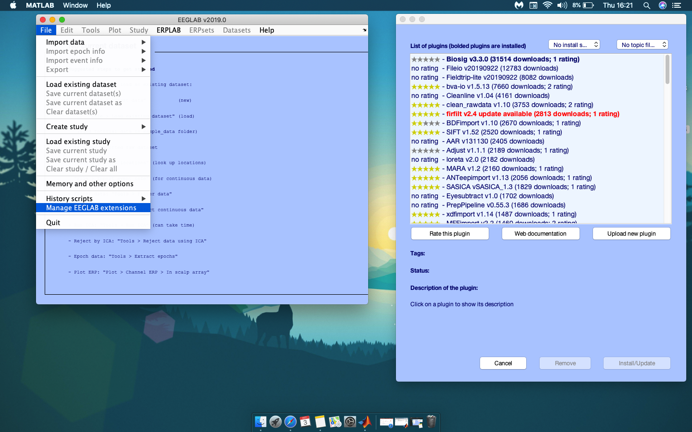
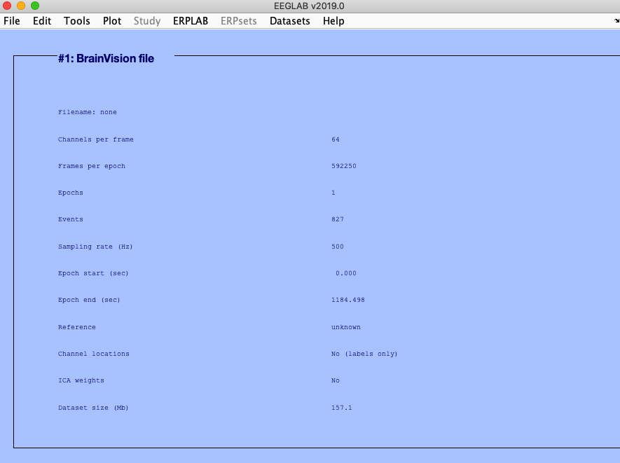
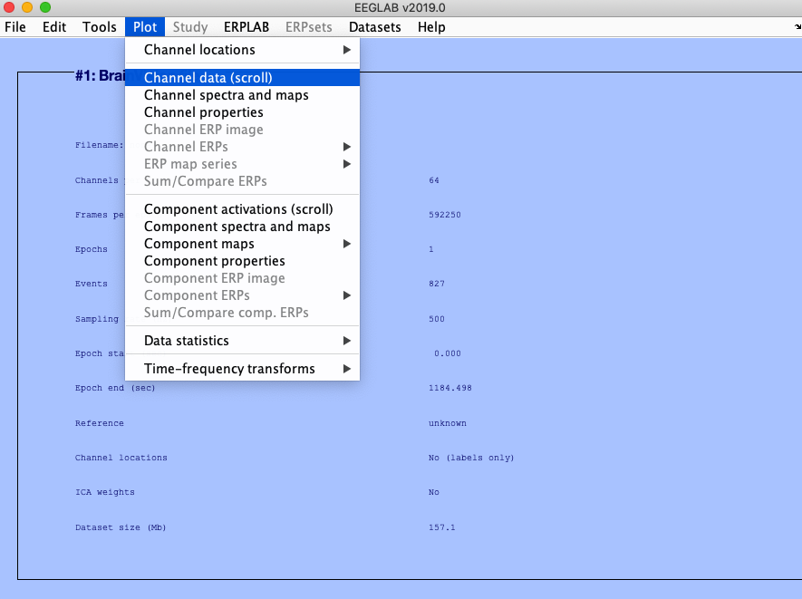
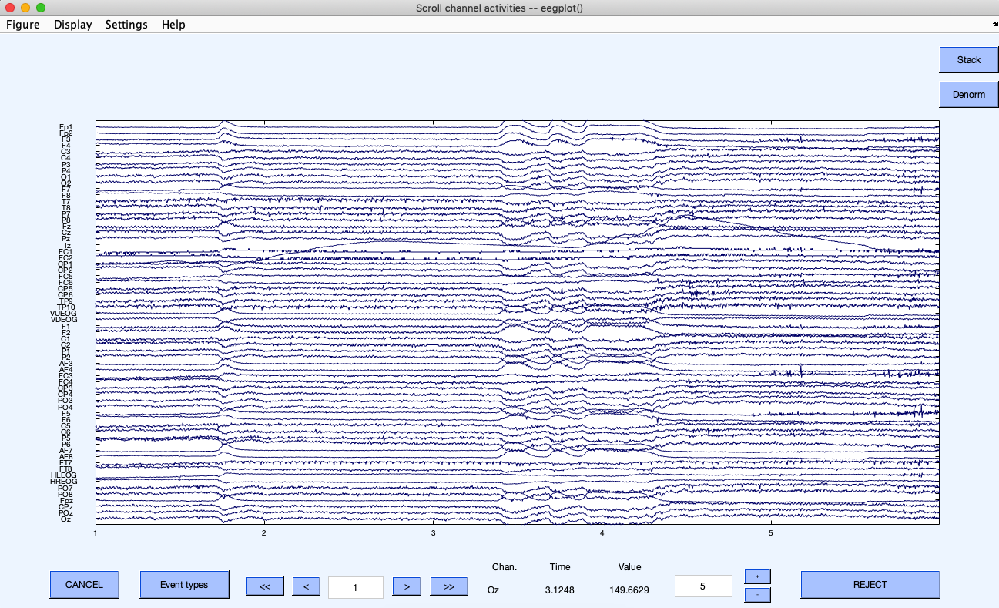

October 9, 2022
After you record your data, it is necessary to preprocess it. This tutorial will show you, in a brief way, how you can first proceed to preprocess your data in the EEGLAB toolbox, created by the Swartz Center for Computational Neuroscience. This first tutorial is dedicated to importing raw data into your eeglab toolbox in MatLab.
Add the EEGLAB toolbox Path. Seth Path > Choose the option "Add Folder" (do not choose the option "add with subfolders").

Type EEGLAB in command line. You will get a main graphic interface.

Import data:
File > Import data > Using EEGLAB functions and plugins. In here you check the format of the data.


If the format that you have it is not listed, you can Manage EEGLAB extensions and import data extensions and data processing extensions. Press FILE and choose the last option.

Using “Load existing data set” allows you to save your dataset next time you open Matlab as a EEGLAB data set (just after importing raw data).
The file will be saved in a specific folder - you choose what folder - and it have the extension .set.
As soon as you import, you will get information about the file name, , number of samples, sampling rate, number of channels, reference, ICA and size.

As soon as you do this, you can see your data. In order to do that, you go to the menu and choose PLOT > Channel data (scroll).

And by doing this, you will be able to scroll into the raw data.
